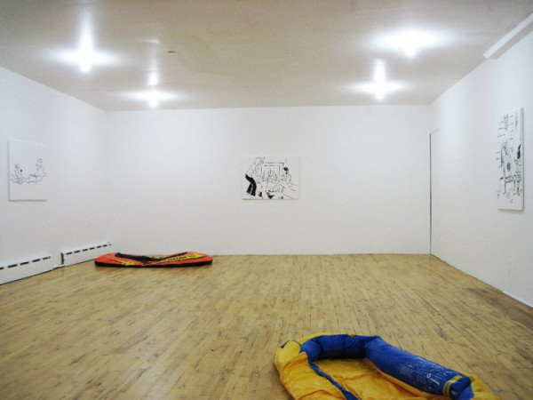
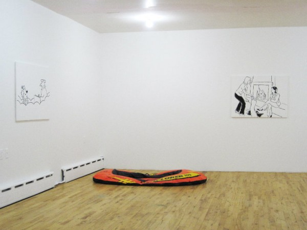

-
Doing Without: Tyler Dobson at Real Fine Arts
by Zak Kitnick September 24, 2010
Tyler Dobson’s second exhibition at Real Fine Arts, a space he co-founded with Ben Morgan Cleveland (think Alan Belcher and Peter Nagy’s Nature Morte Gallery in ’82) presents four new works based on New Yorker cartoons and two others, both deflated rafts.
Seen together, the works seem strangely familiar, but its uncertain if this familiarity is due to the recognizable style of the New Yorker cartoons, or because they have been similarly appropriated before. Even without being able to think of a specific example, one gets the feeling that it has been done and redone and done again, and that this recontextualization is not likely the last. If the saying, ‘Those who don’t know history often end up repeating it,’ could be adapted to art it might read, ‘Those who know art history often end up repeating it.’ But the question shifts: in what ways is it new?
The paintings, matte black lines on thin white canvas, appear nearly indecipherable from the white wall and show only the image; they’re pure picture. The works are also untitled. But unlike the caption-less cartoons in the back of the magazine that invite the viewer to generate their own, here one gets the impression that they have been removed, in addition to other editing, cropping, and subtle adjustments. Formalized, scrubbed, ‘re-opened up,’ the images lend themselves to the canvas without committing to being paintings.
Dobson appears to be interested in making non-paintings (earlier works have involved fabric dye, spackle, toilet paper, stain, candle wax and dye on canvas), and the works in A Luxury is Difficult to Do Without are visually a move away from the painterly results of these materials meeting the canvas. Like the previous work, these retain a sort of matter-of-fact scale, grandless and average. They seem interested in the potential of painting to be critical and, at the same, flirt with the idea of painting as a market commodity (in a relatively non-commercial context). Still, there is a simplicity in their production, contained in the singular action of making copies. The result is as restrained, discreet, and reserved as if they had actually come from a Xerox machine. Like the artists of the Pictures Generation in the 1970’s, Dobson calls into question ideas of authorship and authenticity, original and copy; all the more so for hanging his work on a wall over store-bought rafts.
These deflated rafts provide the only hint of color in the otherwise black and white space. Relating to sculpture with a confusion echoing the one between New Yorker cartoons and painting, the works are sutured further by the implication of a shared upper middle-class/ lower upper-class demographic. More than Koon’s laboriously crafted cast bronze rafts, Dobson’s recall Michael Krebber’s sawn surfboards. In terms of attitude and treatment, and as defunct tools of leisure, the works are similarly concerned with presenting themselves as sculpture in the tension between buying and making.
The press release contains a picture of the artist on the beach at sunset positioned above a 500-word story. The omniscient narration that begins, “He flew to Nantucket on a Saturday” and lists, at one point, a number of italicized names including those of Ralph Lauren and Alex Katz, might be autobiographical. It sounds, in any case, like the musings of a thoughtful young man on vacation. This character’s examination of the potential transformation of driftwood or of the elevation of lobster from lower-class staple to signal extravagance may parallel Dobson’s thinking about work and relaxation, luxury and the quotidian.
As I left I was overcome with a wave of potential connections, from Lichtenstein to Shirgly, but these seemed accurate only on the surface. This was humor without the humor, anyways. Non-cartoons and non-painting, non-rafts and non-sculpture. Non-press release. Yet somehow the rafts seem half full.